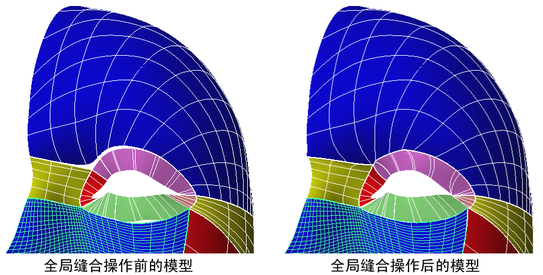
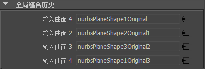
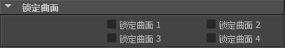

“全局缝合”(Global Stitch)用于防止相邻曲面在变形可能撕开边的动画过程中裂开。它通过将两个或更多相邻曲面自动缝合在一起发挥作用。即使各曲面被缝合，它们仍是单独的实体。会创建一个“全局缝合”(Global Stitch)节点，以保持曲面边之间的关系。作为缝合操作的一部分，“全局缝合”(Global Stitch)还可以使相邻曲面之间的小间距合拢。

例如，如果从多个曲面创建人脸，然后使用簇和晶格变形面部特征，“全局缝合”(Global Stitch)可用于防止在变形人脸时各曲面裂开。
将曲面缝合在一起
- 为曲面创建模型，以便相邻曲面边和角点接触。即，尽可能确保边沿其共享边界具有位置连续性，从而获得最佳结果。避免角点与其他曲面重叠。如有必要，可以使曲面法线指向相反方向。
- 选择曲面。
- 选择“曲面 > 缝合 > 全局缝合”(Surfaces > Stitch > Global Stitch) >
 。
。 - 设定选项。
- 单击“全局缝合”(Global Stitch)。
“全局缝合”(Global Stitch)将缝合曲面。如需增强或更改任何缝合设置，可以在“属性编辑器”(Attribute Editor)中调整缝合属性。
注释
- 如果要接合的曲面具有位置间距或不同切线，则缝合的曲面可能在缝合区域中呈波状。您也可以在缝合之前对齐曲面，以最大程度减少这种情况。
- 如果曲面上的参数范围较小，则对此类曲面应用全局缝合时可能出问题。
重建这些曲面，将参数范围设置为从 0 到跨度数。
可以“锁定”某些曲面使它们不变形（缝合到它们的曲面将更大程度地变形，以保持缝合）。
将缝合的曲面锁定到其原始形状
- 记录要锁定的曲面名称。
- 选择缝合节点。
- 在“属性编辑器”(attribute editor)中，找到与要锁定的曲面相对应的“输入曲面”编号。 
- 在“锁定曲面”(Lock Surfaces)区域中，单击要锁定的曲面编号对应的复选框。 